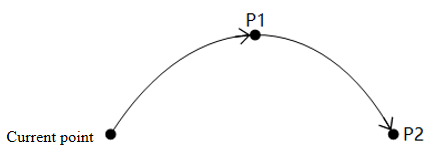
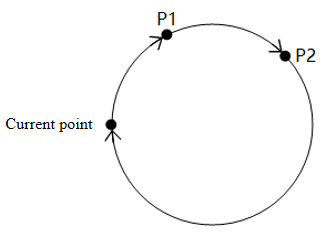
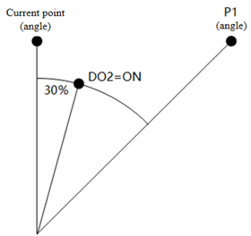
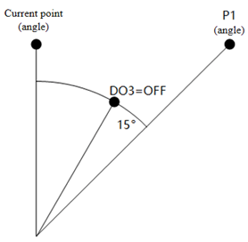
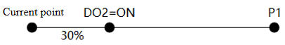
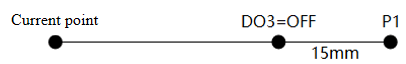

Motion
Command list
The motion commands are used to control the movement of the robot arm. Please read General description before using the commands.| Command | Function |
|---|---|
| MovJ | Joint motion |
| MovL | Linear motion |
| Arc | Arc motion |
| Circle | Circle motion |
| MovJIO | Move in joint mode and output DO |
| MovLIO | Move in linear mode and output DO |
| StartPath | Play back recorded trajectory |
| GetPathStartPose | Get start point of trajectory |
| PositiveKin | Positive solution from joint angle to posture |
| InverseKin | Inverse solution from posture to joint angle |
MovJ
Command:MovJ(point, {user = 1, tool = 0, a = 20, v = 50, cp = 100})
Description:
Move from the current position to the target position through joint motion.
Required parameter:
point: target point
Optional parameter:
- user: user coordinate system index of the target point
- tool: tool coordinate system index of the target point
- a: acceleration rate, range: (0,100]
- v: velocity rate, range: (0,100]
- cp: continuous path rate, range: [0,100]
See General description for details.
Example:
--The robot moves to P1 through joint motion with the default setting.
MovJ(P1)
-- The robot moves to the specified joint angle through joint motion with the default setting.
MovJ({joint={0,0,90,0,90,0} })
-- The robot moves to the specified posture through joint motion, which corresponds to User coordinate system 1 and Tool coordinate system 1, with an acceleration and velocity of 50% and a continuous path rate of 50%.
MovJ({pose={300,200,300,180,0,0} },{user=1,tool=1,a=50,v=50,cp=50})
-- Define the point and then call it in a motion command. The running effect is the same as last command.
customPoint={pose={300,200,300,180,0,0} }
MovJ(customPoint,{user=1,tool=1,a=50,v=50,cp=50})
MovL
Command:MovL(point, {user = 1, tool = 0, a = 20, v = 50/speed = 500, cp = 100, r = 5})
Description:
Move from the current position to the target position in a linear mode.
Required parameter:
point: target point
Optional parameter:
- user: user coordinate system index of the target point
- tool: tool coordinate system index of the target point
- a: acceleration rate, range: (0,100]
- v: velocity rate, range: (0,100]
- speed: target speed, incompatible with v (if both speed and v exist, speed takes precedence). range: [1,maximum motion speed], unit: mm/s
- cp: continuous path rate, incompatible with r. range: [0,100]
- r: continuous path radius, incompatible with cp (if both cp and r exist, r takes precedence). range: [0,100], unit: mm
See General description for details.
Example:
--The robot arm moves to P1 in a linear mode with the default setting.
MovL(P1)
-- The robot moves to P1 in a linear mode at an absolute speed of 500m/s.
MovL(P1,{speed=500})
-- The robot moves to the sprcified angle in a linear mode with the default setting.
MovL({joint={0,0,90,0,90,0} })
-- The robot moves in a linear mode to the specified posture, which corresponds to User coordinate system 1 and Tool coordinate system 1, with an acceleration and speed of 50% and a continuous path radius of 5 mm.
MovL({pose={300,200,300,180,0,0} },{user=1,tool=1,a=50,v=50,r=5})
-- Define the point and then call it in a motion command. The running effect is the same as last command.
customPoint={pose={300,200,300,180,0,0} }
MovL(customPoint,{user=1,tool=1,a=50,v=50,r=5})
-- "speed" takes effect when carried together with "v", and the controller prints the corresponding alarm log at the same time.
-- "r" takes effect when carried together with "cp", and the controller prints the corresponding alarm log at the same time.
MovL(P1,{v=50,speed=500,cp=60,r=5}) -- Only "speed" and "r" of optional parameters take effect during execution
Arc
Command:Arc(P1, P2, {user = 1, tool = 0, a = 20, v = 50, cp = 100, r = 5})
Description:
Move from the current position to the target position in an arc interpolated mode.
As the arc needs to be determined through the current position, P1 and P2, the current position should not be in a straight line determined by P1 and P2.

The posture of the end of the robot during motion is calculated by the posture interpolation at the current point and P2. The posture of P1 is not involved in the calculation (i.e. the posture of the robot when it reaches P1 may be different from the taught posture).
Required parameter:
- P1: intermediate point of the arc
- P2: target point
Optional parameter:
- user: user coordinate system index of the target point
- tool: tool coordinate system index of the target point
- a: acceleration rate, range: (0,100]
- v: velocity rate, range: (0,100]
- speed: target speed, incompatible with v (if both speed and v exist, speed takes precedence). range: [1,maximum motion speed], unit: mm/s
- cp: continuous path rate, incompatible with r. range: [0,100]
- r: continuous path radius, incompatible with cp (if both cp and r exist, r takes precedence). range: [0,100], unit: mm
See General description for details.
Example:
--The robot moves to P1, and then moves to P3 via P2 in an arc interpolated mode.
MovJ(P1)
Arc(P2,P3)
-- The robot moves to P1, and then moves to P3 via {300,200,300,180,0,0}, which corresponds to User coordinate system 1 and Tool coordinate system 1, with an acceleration and speed of 50%.
MovJ(P1)
Arc({pose={300,200,300,180,0,0} },P3,{user=1,tool=1,a=50,v=50})
Circle
Command:
Circle(P1, P2, Count, {user = 1, tool = 0, a = 20, v = 50, cp = 100, r = 5})
Description:
Move from the current position in a circle interpolated mode, and return to the current position after moving specified circles.
As the circle needs to be determined through the current position, P1 and P2, the current position should not be in a straight line determined by P1 and P2, and the circle determined by the three points cannot exceed the motion range of the robot arm.

The posture of the end of the robot during motion is calculated by the posture interpolation at the current point and P2. The posture of P1 is not involved in the calculation (i.e. the posture of the robot when it reaches P1 may be different from the taught posture).
Required parameter:
- P1: point1 in circle motion, not support joint variable
- P2: point2 in circle motion, not support joint variable
- Count: number of circles, range: 1~999
Optional parameter:
- user: user coordinate system index of the target point
- tool: tool coordinate system index of the target point
- a: acceleration rate, range: (0,100]
- v: velocity rate, range: (0,100]
- speed: target speed, incompatible with v (if both speed and v exist, speed takes precedence). range: [1,maximum motion speed], unit: mm/s
- cp: continuous path rate, incompatible with r. range: [0,100]
- r: continuous path radius, incompatible with cp (if both cp and r exist, r takes precedence). range: [0,100], unit: mm
See General description for details.
Example:
--The robot arm moves to P1, and then moves a full circle determined by P1, P2 and P3.
MovJ(P1)
Circle(P2,P3,1)
-- The robot moves to P1 and then moves 10 times along the circle determined by P1, {300,200,300,180,0,0} and P3, with both the user and tool coordinate systems at 1 and the acceleration and velocity of 50%.
MovJ(P1)
Circle({pose={300,200,300,180,0,0} },P3,10,{user=1,tool=1,a=50,v=50})
MovJIO
Command:MovJIO(P,{ {Mode,Distance,Index,Status},{Mode,Distance,Index,Status}...}, {user = 1, tool = 0, a = 20, v = 50, cp = 100})
Description:
Move from the current position to the target position through joint motion, and set the status of digital output port when the robot is moving.
Required parameter:
- P: target point
- Digital output parameters: Set the specified DO to be triggered when the robot arm moves a specified distance or percentage. You can set multiple groups, each of which contains the following parameters:
- Mode: trigger mode. 0: distance percentage; 1: distance value. The system will synthesise the joint angles into an angular vector and calculate the angular difference between the end point and the start point as the total distance of the motion.
- Distance: specified distance/angle
- If Distance is positive, it refers to the percentage/angle away from the starting point
- If Distance is negative, it refers to the percentage/angle away from the target point
- If Mode is 0, Distance refers to the percentage of total angle. range: (0,100]
- If Mode is 1, Distance refers to the angle value. unit: °
- Index: DO index
- Status: DO status. 0/OFF: no signal; 1/ON: with signal
Optional parameter:
- user: user coordinate system index of the target point
- tool: tool coordinate system index of the target point
- a: acceleration rate, range: (0,100]
- v: velocity rate, range: (0,100]
- cp: continuous path rate, range: [0,100]
As continuous path can alter the trajectory of the robot arm and have an effect on the timing of the DO output, please use it cautiously.
See General description for details.
Example:
--The robot arm moves towards P1 with the default setting. When it moves to 30% distance away from the starting point, set DO2 to ON.
MovJIO(P1, {0, 30, 2, 1})

--The robot arm moves towards P1 with the default setting. When it moves to 15° away from the starting point, set DO3 to OFF.
MovJIO(P1, {1, -15, 3, 0})

MovLIO
Command:MovLIO(P,{ {Mode,Distance,Index,Status},{Mode,Distance,Index,Status}...},{user = 1, tool = 0, a = 20, v = 50, cp = 100, r = 5})
Description:
Move from the current position to the target position in a linear mode, and set the status of digital output port when the robot is moving.
Required parameter:
- P: target point
- Digital output parameters: Set the specified DO to be triggered when the robot arm moves a specified distance or percentage. You can set multiple groups, each of which contains the following parameters:
- Mode: trigger mode. 0: distance percentage; 1: distance value
- Distance: specified percentage/distance
- If Distance is positive, it refers to the percentage/distance away from the starting point
- If Distance is negative, it refers to the percentage/distance away from the target point
- If Mode is 0, Distance refers to the percentage of total distance. range: (0,100]
- If Mode is 1, Distance refers to the distance value. unit: mm
- Index: DO index
- Status: DO status. 0/OFF: no signal; 1/ON: with signal
Optional parameter:
- user: user coordinate system index of the target point
- tool: tool coordinate system index of the target point
- a: acceleration rate, range: (0,100]
- v: velocity rate, range: (0,100]
- speed: target speed, incompatible with v (if both speed and v exist, speed takes precedence). range: [1,maximum motion speed], unit: mm/s
- cp: continuous path rate, incompatible with r. range: [0,100]
- r: continuous path radius, incompatible with cp (if both cp and r exist, r takes precedence). range: [0,100], unit: mm
The continuous path will change the trajectory of the robot arm and affect the timing of DO output. Please use it cautiously.
See General description for details.
Example:
--The robot moves towards P1 with the default setting. When it moves 30% distance away from the starting point, set DO2 to ON.
MovLIO(P1, {0, 30, 2, 1})

--The robot moves towards P1 with the default setting. When it moves 15mm away from the starting point, set DO3 to OFF.
MovLIO(P1, {1, -15, 3, 0})

StartPath
Command:StartPath(string, {multi = 1, isConst = 0, sample = 50， freq = 0.2, user = 0,tool = 0})
Description:
Play back the recorded trajectory in the specified trajectory file. You need to run the robot to the starting point of the trajectory when calling this command.
Required parameter:
string: trajectory file name (including suffix)
Optional parameter:
- multi: speed multiplier in playback, valid only when isConst=0. range: [0.1, 2], 1 by default.
- isConst: if or not to reproduce at a constant speed. The default value is 0.
- 1 means the trajectory will be reproduced at the global rate at a uniform rate by the arm;
- 0 means the trajectory will be reproduced at the same speed as when it was recorded, and the motion speed can be scaled equivalently using the multi parameter, where the motion speed of the arm is not affected by the global rate.
- sample: the sampling interval of the trajectory points, i.e. the sampling time differences between two adjacent points when generating the trajectory file. range: [8, 1000], unit: ms, 50 by default (the sample interval when the controller records the trajectory file).
- freq: The smaller the value of this parameter, the smoother the playback trajectory curve is, but the more severe the distortion relative to the original trajectory. Please set the appropriate filter coefficient according to the smoothness of the original trajectory. range: (0,1], 1 refers to turning off filtering, 0.2 by default.
- user: user coordinate system index corresponding to the trajectory point (use the user coordinate system index recorded in the trajectory file if not specified)
- tool: tool coordinate system index of the target point (use the tool coordinate system index recorded in the trajectory file if not specified)
Example:
--After moving to the start point of the "track.csv" file, the robot plays back the trajectory recorded in the file at 2 times the original speed.
local StartPoint = GetPathStartPose("track.csv")
MovJ(StartPoint)
StartPath("track.csv", {multi = 2, isConst = 0})
--After moving to the start point of the "track.csv" file, the robot plays back the trajectory recorded in the file at the uniform speed.
local StartPoint = GetPathStartPose("track.csv")
MovJ(StartPoint)
StartPath("track.csv", {isConst = 1})
GetPathStartPose
Command:GetPathStartPose(string)
Description:
Get the start point of the trajectory. The type of point data (taught point/joint/posture) may be different according to the trajectory files.
Required parameter:
string: trajectory file name (including suffix)
Example:
--Get the start point of the "track.csv" file and print it.
local StartPoint = GetPathStartPose("track.csv")
print(StartPoint)
-- StartPoint = {joint={j1,j2,j3,j4,j5,j6},"name" = "",user = userIndex,tool = toolIndex,pose = {x,y,z,a,b,c}}
-- StartPoint = {joint={j1,j2,j3,j4,j5,j6}}
-- StartPoint = {pose = {x,y,z,a,b,c}}
PositiveKin
Command:PositiveKin(joint, {user = 1, tool = 0})
Description:
Positive solution. Calculate the coordinates of the end of the robot in the specified Cartesian coordinate system, based on the given angle of each joint.
Required parameter:
joint: Joint variables, format: {joint = {j1, j2, j3, j4, j5, j6} }
Optional parameter:
- user: User coordinate system index. The global user coordinate system will be used when it is not specified
- tool: Tool coordinate system index. The global tool coordinate system will be used when it is not specified
Return
Posture variables through positive solution, format: {pose = {x, y, z, rx, ry, rz} }
Example:
PositiveKin({joint={0,0,-90,0,90,0} },{user=1,tool=1})
Calculate the coordinates of the end of the robot in the User coordinate system 1 and Joint coordinate system 1, based on the joint coordinates ({0,0,-90,0,90,0}).
InverseKin
Command:InverseKin(pose, {useJointNear = true, jointNear = joint, user = 1, tool = 0})
Description:
Inverse solution. Calculate the joint coordinates of the robot, based on the given coordinates in the specified Cartesian coordinate system.
As Cartesian coordinates only define the spatial coordinates and tilt angle of the TCP, the robot arm can reach the same posture through different gestures, which means that one posture variable can correspond to multiple joint variables. To get a unique solution, the system requires a specified joint coordinate, and the solution closest to this joint coordinate is selected as the inverse solution.
Required parameter:
pose: Posture variables, format: {pose = {x, y, z, rx, ry, rz} }
Optional parameter:
- useJointNear: boolean value, used to set whether JointNear is effective.
- true: The algorithm selects the joint angles according to JointNear data.
- false or null: JointNear data is ineffective. The algorithm selects the joint angles according to the current angle.
- This parameter is ineffective if only this parameter is while jointNear parameter is not carried.
- jointNear: Joint coordinates for selecting joint angles, format:
{joint = {j1, j2, j3, j4, j5, j6} } - user: User coordinate system index. The global user coordinate system will be used when it is not specified
- tool: Tool coordinate system index. The global tool coordinate system will be used when it is not specified
Return
- Error code: 0 means that the inverse solution is successful, and -1 means that the inverse solution fails (no solution).
- Joint angle obtained through the inverse solution, format:
{joint = {j1, j2, j3, j4, j5, j6}}. When the inverse solution fails, j1~ j6 are 0.
Example:
local errId, jointPoint = InverseKin({ pose = {300, 200, 300, 180, 0, 0} }, {useJointNear = true, jointNear = { joint = {90, 30, -90, 180, 30, 0} } })
The Cartesian coordinates of the end of the robot arm in the global user coordinate system and global joint coordinate system are {300, 200, 300, 180, 0, 0}. Calculate the joint coordinates and select the nearest solution to the joint angle {90, 30, -90, 180, 30, 0}.